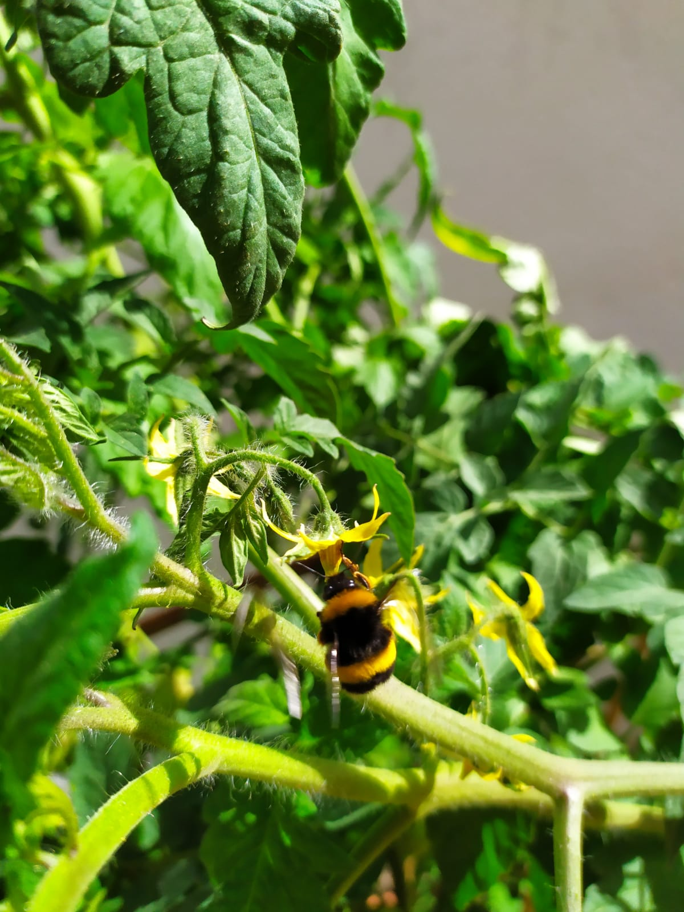

Bienvenid@ te doy las gracias por deslizarte por mi página web y hacer descubrimientos científicos junt@s.
Te presento mi Trabajo Fin de Grado.
Soy Laura Quintana Portales estudiante de grado del último curso en Ciencias Experimentales impartido en la Universidad Rey Juan Carlos.
En esta pagina web encontrarás todo lo relacianodo con el Trabajo Fin de Grado que he realizado. Este trabajo lo comencé a principios de marzo de 2020, efectivamente antes de cuarentena, como con el coronavirus yo no sabía muy bien lo que se me venía encima, pero se ha demostrado que con trabajo, esfuerzo y siempre con la ciencia de nuestra parte podremos conseguir grandes cosas.
Curiosa palabra la de experimentar ¿no? Para algunas personas esta palabra significa curiosidad, desarrollo, cambio, entender, descubrir, comprobar o demostrar, pero también se me vienen a la cabeza otras palabras como lenta, repetitiva y larga. Por esto mucha gente puede llegar a pensar que es una perdida de tiempo. ¿Esto significa que tenemos que renunciar a la ciencia si queremos ganar tiempo? No necesariamente, como buenos científicos sabemos que un proyecto no se acaba de la noche a la mañana, pero gracias al gran desarrollo de las tecnologías podemos hacer modelos que nos ayudan a simplificar la naturaleza y a disminuir el tiempo en el que podemos obtener resultados concluyentes.
En este apartado encontrarás mi trabaja al completo. Puedes leerlo las veces que quieras y también compartirlo.
No olvides que para avanzar en la ciencia hay que compartir lo que uno sabe con los demás.
En este apartado nos sumergiremos en el mundo de las plantas. Una vez escuche o leí, no sabría decir muy bien dónde, que existen tantos mundos como personas, pero en mi opinión existen tantos mundos como seres vivos. Por qué digo esto, yo he estudiado Ciencias Experimentales y he tenido profesores de diferentes ramas de la ciencia, y cada uno ve el mundo de diferente forma y es maravilloso.
En este caso nos sumergiremos en el mundo de las plantas, aparentemente las plantas son seres muy simples en comparación a un mamífero como pudiera ser un ratón o nosotros mismos, pero que sea sencillo no significa que no pueda crear relaciones sociales complejas entres plantas de la misma especie o incluso entre otras especies.
Te adjunto el PDF con el estudio que he realizado para que lo leas y veas las conclusiones a las que he llegado, quizás tú generes otras conclusiones, o aun mejor otras preguntas que puedan ayudar a mejorar el modelo.
En este apartado encontrarás el modelo que he realizado mediante el programa Netlogo, te aconsejo que vayas primero al apartado TFG antes de ver el programa, ya que allí se explica como se usa el modelo. Sé que quizás es un poco difícil de entender el funcionamiento de un programa explicado con palabras y como una imagen vale más que mil palabras te dejo un vídeo que te ayudará a entenderlo mejor.